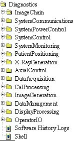
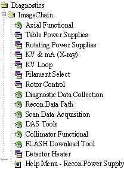
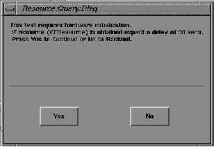

Proprietary to General Electric
Direction 5114045-800, Rev# 10
LightSpeed 4.X Service Information (Advanced)
Proprietary to General Electric |
With a proprietary service key installed, the advanced diagnostics menu will be displayed as described below. The diagnostics menu provides access to a list of major function elements of the system (refer to Illustration 2). Select one of these major functions, and click to display a window that contains the tools and diagnostics used when troubleshooting this functional area of the system.
Illustration 1: Diagnostics Icon
Illustration 2: Diagnostics Menu (Advanced Service Desktop)

Illustration 3 shows the ImageChain diagnostics menu.
Illustration 3: Advanced Diagnostics, ImageChain Menu

The menu has three types of icons:
The first icon represents tools and diagnostics that require the download of diagnostic firmware to the scan control sub-system.
If a selected test finds that application firmware is loaded and it needs diagnostic firmware, you will have to wait for diagnostic FIRMWARE DOWNLOAD to take place upon confirmation (refer to Illustration 4).
The second icon represents tools and diagnostics that require the download of application firmware to the scan control sub-system.
The third icon represents tools and diagnostics that do not require the download of any firmware to the scan control sub-system.
A particular tool or diagnostic is executed by clicking on its icon or on the text next to the icon.
Grouping the tools and diagnostics associated with troubleshooting a functional area of the system provides a convenient reminder of the available system software related to this function.
| NOTE: | Brackets surrounding a name on the menu indicate it is a planned feature (one not yet implemented). |
Illustration 4: Firmware Download Query Pop-Up
